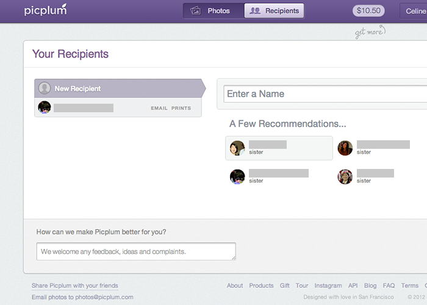
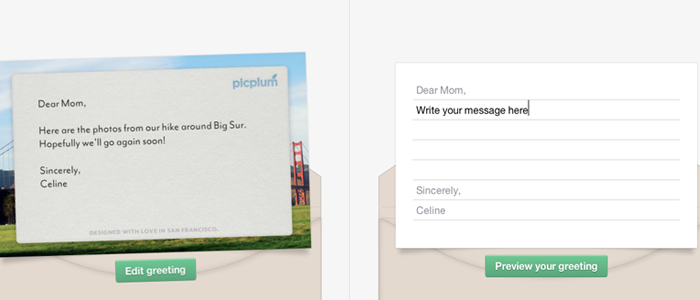
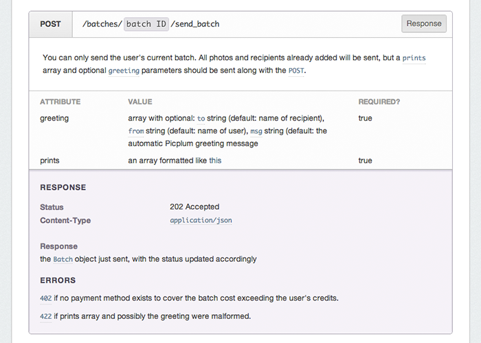
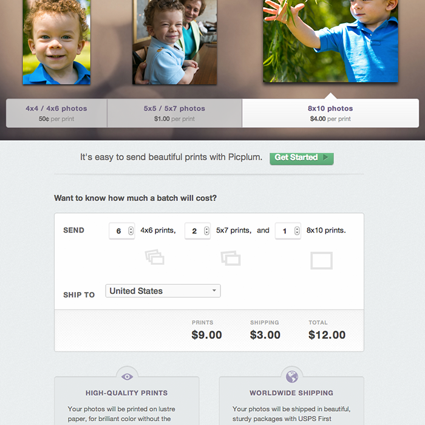

I interned at Picplum doing design and UX. Picplum is an automatic photo printing service—you upload photos to send to friends and family—and the company places a heavy emphasis on a well-designed, thoughtful experience from ordering the prints to receiving them. While there, I designed several interactions and interfaces for core product features, and designed and built several pages to provide information to consumers and developers (for the developer API released that summer).

My first assignment that summer was redesigning the way users entered recipients for a package of photo prints. Entering multiple recipients and filling out mailing information is a fairly laborious and time-consuming process. I spent time wireframing each step of adding and editing recipients, and designed some new features and interactions for a Facebook integration (to make collecting contact information easier for users). The interaction flows more smoothly, and the Facebook integration helps prompt and encourage users to send prints by suggesting recipients. Visually, the interface is cleaner, offers a better hierarchy and overview of what information the user has already typed in, and the forms are easier to navigate.

I also worked on designing another feature of the ordering process—adding a greeting card to be sent along with the photos. This feature was introduced over the summer, and I designed an interface showing the greeting poking out of the envelope—to reinforce the physical nature of the product. The goal was to go beyond a contextless text box for the message and show a salient preview of what the greeting would look like when sent. I also designed the printed greeting card template.

Picplum also released a developer API that summer, and I was responsible for both designing and implementing. I learned a lot about how APIs are designed and structured, and examined API documentation for other web services and products to get a sense of the best way to present information about different API endpoints to developers. The resulting Picplum for Developers website offers a clear and comprehensive overview of the API and how to use it.

Since Picplum customers frequently asked about the pricing for different photo packages, I was assigned the task of designing a products page that helped people figure pricing for themselves. I started by brainstorming on the purpose the page would serve and the functionality required. Users needed to understand pricing for different products, and we also wanted to tempt them with an attractive product display and details about the paper and printing quality of the photos. After several sketches, wireframes, and revisions, I settled on a layout that featured a showcase of different print sizes, a visual calculator for determining photo and shipping costs, and had small informational modules that included additional information about the Picplum service. A neat design detail—the print icons in the calculator change depending on the number in each input box.
- Year 2012
- For Summer internship at Picplum